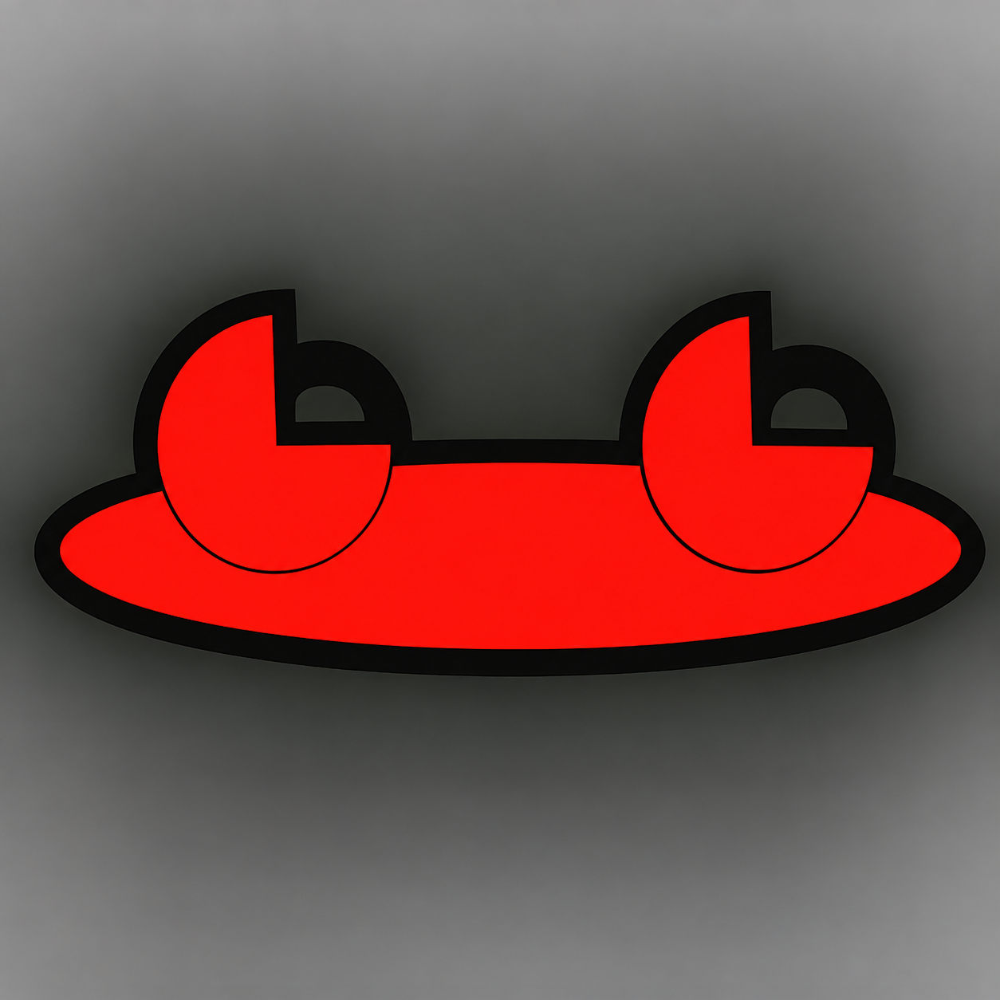

In Testing · Android
Frog Cleaner
A transparent, user-controlled storage review tool that helps you understand large and aging files before deciding what to remove.
Review first. Decide second.
- Clear storage analysisReview selected folders for large or older files and understand where storage is being used.
- User-selected accessChoose a folder through Android’s system picker, with broader device analysis available only as an explicit option.
- No automatic deletionFrog Cleaner is designed to present findings clearly and keep cleanup decisions in your hands.
- Plain-language boundariesThe app explains what it can inspect, what Android restricts, and why any special access may be requested.
Privacy and control
Analysis happens on the device. Frog Cleaner does not sell personal information, run ads, require an account, or use access for unrelated purposes. The current build remains in testing pending final device validation and release review.